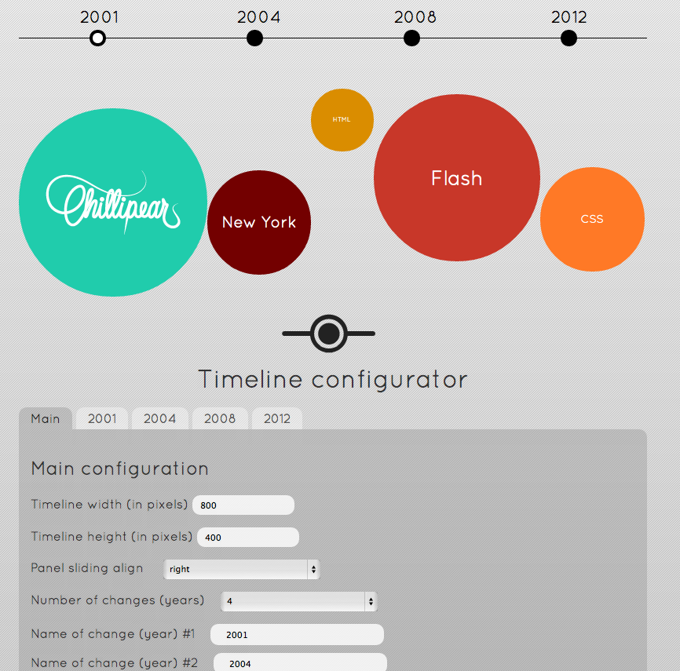

Timeline Documentation by ChilliPear v1.0
Timeline
Created: 13/09/2012
By: ChilliPear
Thank you for purchasing our plugin. If you have any questions that are beyond the scope of this help file, please feel free to email via my user page contact form here. Thanks so much!
Table of Contents
A) What is Timeline ? - top
Timeline is a plugin that helps you to show your lifetime, job experience or any other activity graphically in a really modern interactive way. With it's built in configurator you can easily add,change and customize the timeline without any programming skills.
B) Folder Structure - top
When you unzip the downloaded file the folder structure will look the following:
documentation - The documentation to the plugin.
timeline - The plugin itself. Here you can find the required files for the plugin.
example - Here you can find a simple example how to plugin works.
C) Getting Started - top
At first you need to upload every file from the timeline folder in to a live web server. Then include the timeline.php into you web site. You can place it anywhere you want. Include the timeline.php like this: <?php include 'timeline.php'; ?>
Please note, that the file where you include the timeline.php needs to be a php file and the latest jQuery library must be included in your website.
Also note, that the timeline.php, circle.json, config.php and the timeline.css must be in the same "level" where is the file where you included the timeline.php.
If you done everything right you should see the timeline in your website with the pre configured settings.
D) Configure the plugin - top
You can completely costumizate the timeline with the config.php file. Open the config.php file in a web browser, when you opened it you should see an interface like this:
In the top of the interface you can see the timeline. This is a real view of the timeline, when you change and save something the change will immediately appear here. Note, if you already included the timeline.php to your site the changes what you make here will appear on your site too. Under the timeline you can see the Timeline configurator this is the configurator to the timeline plugin. Please, save every change what you make with the Save changes button.
It's strongly recommended to delete or hide the config.php file after you configured the timeline ! If you not delete the config.php file someone can change your timeline's values easily!Main tab
In the main configuration section you can specify the timeline width and height, the sliding align of the panel and the years.
Number of changes (years):
Here you select how many years/period you want to show. When you change the value be sure you save your changes.
Name of change (year):
Here you specify the date or name for each period. When you change it save it!
"Year" tab
Within each tab you can specify the circles.
Number of circles
With this drop down you can select how many circle you want to show in that particular year/period. If you choose 5 than you should see 5 circles. For each circle you can set the name, circle size, text size, circle color, textcolor and the full text.
name
With is input you specify the text what is inside the circle. You can add images here too, to add a image use this from:
<img src="chplogo.png" /> - Please use double quotes!
Circle size
With the circle size input you specify the circle size. This size is not in px or percentage this is a relative size.
Text size
With the text size you can specify the text size of the text what is inside the circle in px.

Circle color (#HEX)
With the circle color input you specify the circles's background color, please add the color in HEX.
For example, a brown circle (HEX: #693523)
Text color (#HEX)
With the text color you can specify the text color of the text what is inside the circle in Hex value.
For example, a white (#fff) text should looks like this:
Full text
With the full text input you specify the text what is inside the slide out panel. You can use images, links or any other standard HTML element.
E) CSS - top
You can change the colours and font style easily in the timeline.css stylesheet.
F) Troubleshooting - top
The save not working, the saved data is not saved in the db
To prevent this issue you need to add 777 to the simpledb.php file, the file is in the simpledb folder. If it does not work with the method previously mentioned check the simpledb folder for datahive.php file, if its not exists create it.
Once again, thank you so much for purchasing this plugin. As I said at the beginning, I'd be glad to help you if you have any questions relating to this plugin. No guarantees, but I'll do my best to assist. If you have a more general question relating to the plugin on CodeCanyon, you might consider visiting the forums and asking your question in the "Item Discussion" section.
ChilliPear